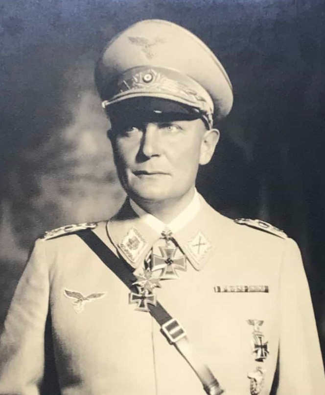

Cette fiche présente un dirigeant du régime nazi, acteur central de l’appareil politique, militaire ou répressif du Troisième Reich. Les informations ci‑dessous sont exposées dans un cadre strictement historique et documentaire, conformément aux exigences muséales de neutralité et de contextualisation.
Le régime nazi, établi en Allemagne entre 1933 et 1945, mit en œuvre des politiques de persécution, de déportation et d’extermination, ainsi qu’une guerre d’agression à l’échelle européenne. Les responsables présentés dans cette section occupèrent des fonctions majeures dans ces structures de pouvoir et dans les décisions prises par l’État allemand durant cette période.
Nom : Hermann Wilhelm Göring
Dates : 12 janvier 1893 – 15 octobre 1946
Nationalité : Allemande
Hermann Göring fut l’un des principaux responsables du régime nazi. Proche d’Adolf Hitler, il participa à la consolidation du pouvoir du NSDAP et occupa plusieurs postes au sein de l’appareil d’État.
Il dirigea la Luftwaffe, exerça des responsabilités dans l’économie de guerre et prit part aux structures de répression du régime.
Göring fut nommé commandant en chef de la Luftwaffe, qu’il dirigea durant les premières années du conflit. Il participa aux décisions militaires, à la gestion de l’économie du Reich et à la coordination de l’appareil administratif et policier.
Il fut impliqué dans les politiques de persécution et dans les décisions stratégiques du haut commandement nazi.
Göring est considéré comme l’un des principaux dirigeants du régime nazi. Son rôle dans la direction militaire, l’économie de guerre et les structures administratives du Reich en fait une figure centrale de l’appareil d’État.
Sa responsabilité dans les crimes du régime fut reconnue lors du procès de Nuremberg, où il fut condamné à mort avant de se suicider.